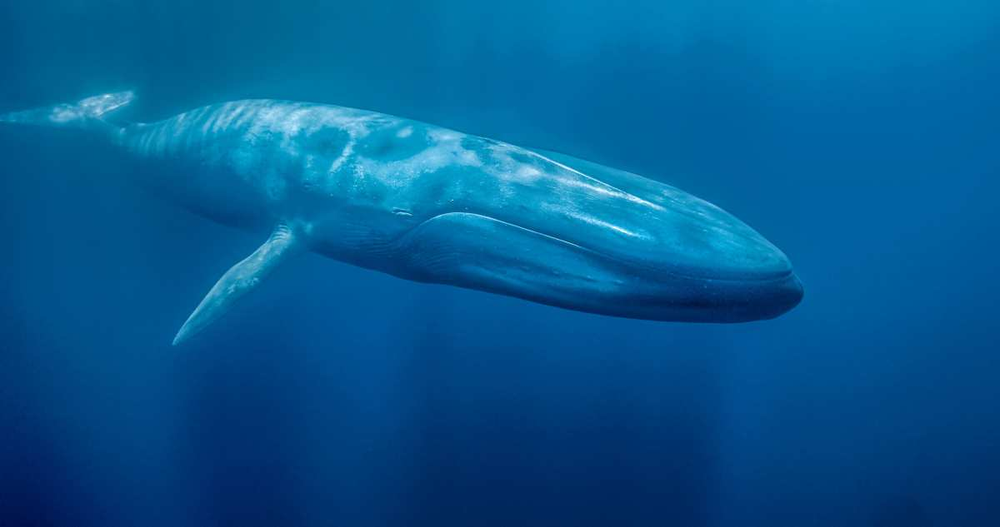

.jpg "Manada")
Las ballenas son los animales más grandes que jamás hayan existido. Pertenecen a un grupo de mamíferos marinos conocidos como cetáceos. No son peces porque tienen sangre caliente, respiran aire a través de pulmones y dan a luz a crías vivas que se alimentan de leche materna. Los balénidos (Balaenidae) son una familia de cetáceos misticetos que incluye cuatro especies, distribuidas en dos géneros, Balaena y Eubalaena. Sin embargo el término ballena es usado en sentido amplio para referirse a todos los grandes cetáceos incluidos en el parvorden Mysticeti (cetáceos con barbas) como el rorcual azul (Balaenoptera musculus) y a varias especies del parvorden Odontoceti (cetáceos dentados), por ejemplo el cachalote (Physeter macrocephalus).
Los balénidos (Balaenidae) son una familia de cetáceos misticetos que incluye cuatro especies, distribuidas en dos géneros, Balaena y Eubalaena. Sin embargo el término ballena es usado en sentido amplio para referirse a todos los grandes cetáceos incluidos en el parvorden Mysticeti (cetáceos con barbas) como el rorcual azul (Balaenoptera musculus) y a varias especies del parvorden Odontoceti (cetáceos dentados), por ejemplo el cachalote (Physeter macrocephalus).
| Cria | adulto | Manada |
|---|---|---|
|  | |